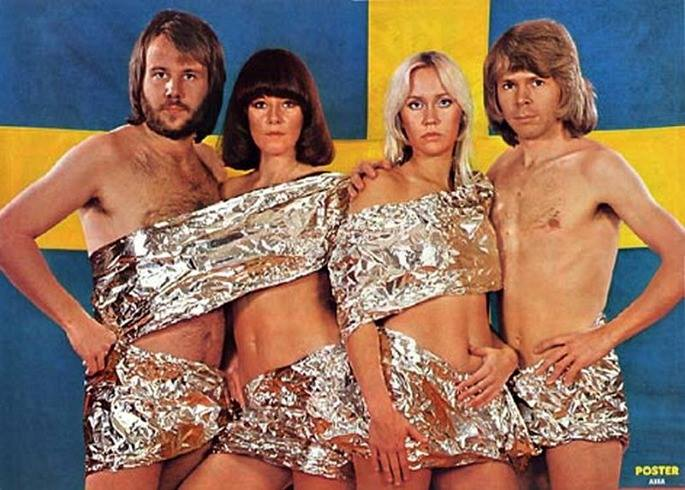
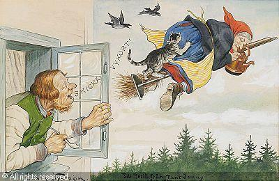

ABBA

(di Silvia Nustriani)
Quando si parla di Stoccolma, non si può non ricordare Agnetha, Björn,
Benny e Anni-Frid…. Sono stati, e sono ancora per la maggior parte di
noi, gli ABBA, la mitica band svedese in stivali con le zeppe e tutine
di paillettes che ha rivoluzionato la musica pop tra il 1972 e il 1983.
Era il 1974 quando tutto ebbe inizio: con il brano "Waterloo" vinsero
l'Eurofestival e, da allora, gli Abba, celebre band svedese, entrarono
nella storia della musica internazionale: il loro nome altro non è un
acronimo che mette insieme le iniziali dei membri, Agnetha, Benny,
Björn e Anni-Frid un gruppo dai numeri da capogiro con un’eredità alle
spalle di 380 milioni di dischi venduti. Un successo inaspettato quello
che travolse la band svedese che rimase sulla cresta dell'onda fino al
1982, anno in cui smisero di produrre dischi: nonostante il ritiro
dalla scena, le loro canzoni sono tutt'oggi attuali e infiammano i
dance floor, conquistano il cinema e il teatro con pellicole e musical
di successo.
Chi non si è mai trovato a ballare e cantare tormentoni come "Dancing
Queen" e, soprattutto, "Mamma Mia"? Difficile levarsi dalle orecchie le
melodie che hanno contraddistinto questo gruppo, per questa ragione
vale la pena spingersi nella loro terra, la Svezia, approdando a
Stoccolma: qui, ad aprire le porte dei nostalgici o dei curiosi un
intero museo dedicato alla band nazionale, "Abba The Museum", nato là
dove un tempo sorgeva un vecchio magazzino merci di proprietà del Porto
di Stoccolma. Non una semplice visita ma una vera e propria esperienza
multisensoriale che coinvolge e trascina in un coinvolgente viaggio
interattivo: tutti possono provare il Polar Studio, ovvero la sala
d'incisione del gruppo, ricostruita in scala ridotta, dove si trovano
gli strumenti musicali, la consolle originale dei fab four; la location
è perfetta per sperimentare il brivido di sentirsi parte della band e,
se non fosse abbastanza, grazie a moderni ologrammi 3D, si balla
insieme con loro. Attraverso l'audioguida del museo inoltre, Agnetha,
Benny, Björn e Frida aprono i loro cuori confidando per la prima volta
al pubblico ricordi personali di quando erano ancora gli Abba.
Impossibile non tornare indietro nel tempo e ricordare quei personaggi
dallo stile bizzarro e provocatorio fatto di mise decisamente
stravaganti ed eccentriche con quelle vertiginose zeppe e gli abiti
dalle luminose fantasie e le tutine iper attillate da scoprire nella
Dressing Room dove, virtualmente, si scelgono gli abiti e ci si scatena
davanti a uno schermo dando il meglio di sé per un esibizione da urlo.
Pochi giorni fa nel nostro gruppo era stata data la notizia che gli
Abba si erano riuniti in occasione dell’inaugurazione di un ristorante
greco gestito da Bjoern Ulvaeus. Si tratta di una taverna greca che si
ispira al musical “Mamma Mia”. Il ristorante si chiama “Nikos Taverna
at Tyrol” ed è stato pensato come una serata in una taverna greca
sull’isola di Skopelos, dove fu realizzato il film. Se, invece, cercate
un ristorante tipico seguite i consigli della nostra Elena, non c’è
miglior ristorante di casa vostra grazie alle sue gustosissime ricette!
La Befana
la vecchiaccia di Pasqua

(di Silvia Nustriani)
La Befana in Svezia arriva il giorno di Pasqua. La figura di
Påskkärring, la vecchiaccia di Pasqua, risale ad una vecchia credenza
popolare secondo la quale una strega, in groppa ad una scopa volava
alla fittizia Blåkulla nella notte tra il mercoledì e il giovedì santo
per poi tornare il giorno di Pasqua, per festeggiare il sabba con il
diavolo. Blåkulla è il luogo dove le streghe si incontrano
il giovedì santo, il giorno in cui Gesù fu tradito da Giuda liberando
tutti i poteri malvagi, per incontrarsi con Satana e praticare orge e
banchetti. Di questa leggenda sono rimaste alcune tracce. La prima ha
come protagonisti bambine e bambini, che vestiti da strega o da vecchi
uomini, la sera del giovedì santo vanno in giro per il loro quartiere,
bussano alle porte dei vicini, augurano una felice Pasqua e in cambio
di un biglietto pasquale da loro disegnato ricevono dolci, soldi o
altri piccoli doni. La seconda traccia si ritrova nei falò che tuttora
vengono accesi, in diverse regioni della Svezia, la sera della vigilia
di Pasqua per “spaventare le streghe durante il loro viaggio di ritorno
da Blåkulla”.